Funciones de Densidad
Ejemplo :
La cantidad de horas en las que un vehiculo tarda en atravesar una autopista de 1 km en un recorrido rectilíneo, esta descrita por la variable aleatoria X, con función de densidad:
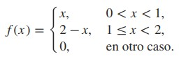 [1]Calcule la probabilidad de que el vehiculo:
- tarde 12 minutos.
- tarde entre 10 y 20 minutos.
Adaptado del Ejercicio 3.7 Propuesto por Walpole R., Myers R., Myers S., Keying Ye (2007). Probabilidad y Estadística para ingeniería y Ciencias (8va Edición),
Mexico D.F. : Pearson (p.131)
Pasos de solución
-
- Se plantean las siguientes integrales:
- Evaluar las integrales y operar:
- El resultado es: 0.68


Respuesta:
La probabilidad de que tarde 12 minutos es de 68%
-
- Se plantea la siguiente integral:
- Evaluar la integral y operar:
- El resultado es: 0.375


Respuesta:
La probabilidad de que tarde entre 10 y 20 minutos es de 37.5%
Conceptos aplicados en la solución
-
- Por definición de distribución de probabilidad: 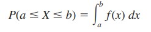
- Por Teorema Fundamental del Cálculo para integrales definidas: 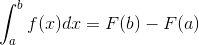
-
- Por definición de distribucion de probabilidad:
- Por Teorema Fundamental del Calculo para integrales definidas:
Distribución Normal
Ejemplo :
Una fabrica de madera reparte soportes a las tiendas locales y tienen una longitud promedio de 30 centímetros y una desviación estándar de 2 centímetros. Si se supone que las longitudes están distribuidas normalmente, ¿qué porcentaje de las barras son:
- más largas que 31.7 centímetros?
- de entre 29.3 y 33.5 centímetros de longitud?
- más cortas que 25.5 centímetros?
Adaptado del Ejercicio 6.12 Propuesto por Walpole R., Myers R., Myers S., Keying Ye (2007). Probabilidad y Estadística para ingeniería y Ciencias (8va Edición),
Mexico D.F. : Pearson (p.186)
Pasos de solución
-
- Primero buscamos el porcentaje de barras superior a 31,7 cm, por medio de la fórmula de distribución normal estándar donde:
- Se aplican propiedades de variable aleatoria y se opera: 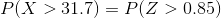 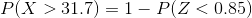 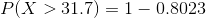
- El resultado es: 0.1977

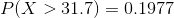Respuesta:
La probabilidad de que las barras sean mas largas de 31.7 centimetros es de 19.77%
-
- Del mismo modo determinamos el porcentaje de barras que se encuentran entre 29.3 y 33.5 cm: 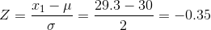 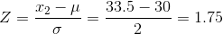
- Se aplican propiedades de variable aleatoria y se opera: 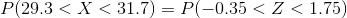 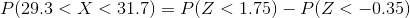 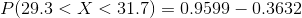 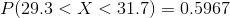
- El resultado es: 0.5967
Respuesta:
La probabilidad de que las barras 29.3 y 33.5 centimetros es de 59.67%
-
- Finalmente calculamos el porcentaje de barras de diámetro menor a 25.5: 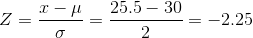
- Se aplican propiedades de variable aleatoria y se opera: 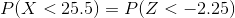 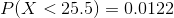
- El resultado es: 0.122
Respuesta:
La probabilidad de que las barras sea menor de 25.5 centimetros es de 12.2%
Conceptos aplicados en la solución
-
-
Z = Se interpreta como el número de desviaciones estándar que están comprendidas entre el
promedio y un cierto valor de variable x.
µ = Es la media de la distribución normal
σ= Es la desviación típica - Por definición de distribución normal: 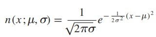 [2]
-
Z = Se interpreta como el número de desviaciones estándar que están comprendidas entre el
promedio y un cierto valor de variable x.
µ = Es la media de la distribución normal
-
-
Z = Se interpreta como el número de desviaciones estándar que están comprendidas entre el promedio y un cierto valor de variable x.
µ = Es la media de la distribución normal
σ= Es la desviación típica - Por definición de distribución normal: [2]
-
Z = Se interpreta como el número de desviaciones estándar que están comprendidas entre el promedio y un cierto valor de variable x.
µ = Es la media de la distribución normal
-
-
Z = Se interpreta como el número de desviaciones estándar que están comprendidas entre el promedio y un cierto valor de variable x
µ = Es la media de la distribución normal
σ = Es la desviación típica - Por definición de distribución normal: [2]
-
Z = Se interpreta como el número de desviaciones estándar que están comprendidas entre el promedio y un cierto valor de variable x
µ = Es la media de la distribución normal
Distribución Exponencial
Ejemplo :
El tiempo de reparación en años de un computador, está descrito por la siguiente función de densidad:
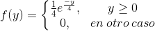 [1]Calcule la probabilidad de que el computador requiera una reparación mayor despues de 2 años.
Adaptado del Ejemplo 6.21 Propuesto por Walpole R., Myers R., Myers S., Keying Ye (2007). Probabilidad y Estadística para ingeniería y Ciencias (8va Edición),
Mexico D.F. : Pearson (p.200)
Pasos de solución
- Considerando la probabilidad como: 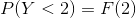
- Hallando la función de distribución acumulativa: 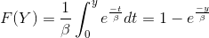
- Evaluando en la función de distribución acumulativa para y = 2: 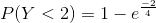
- El resultado es: 0.393
Respuesta:
La probabilidad de que un computador requiera de una reparación mayor antes de 2 años es de 39.3%
Distribución Gamma
Ejemplo :
La distribución Gamma sirve para calcular la probabilidad de ciertos eventos en experimentos que siguen un proceso de Poisson. Por ejemplo, Suponga que las llamadas telefónicas que llegan a un asesor de call center particular siguen un proceso de Poisson con un promedio de 5 llamadas entrantes por minuto. ¿Cuál es la probabilidad de que transcurra hasta un minuto en el momento en que han entrado 2 llamadas al asesor?.
Adaptado del Ejemplo 6.18 Propuesto por Walpole R., Myers R., Myers S., Keying Ye (2007). Probabilidad y Estadística para ingeniería y Ciencias (8va Edición),
Mexico D.F. : Pearson (p.198)

Pasos de solución
- Se plantea una distribucion gamma con:
- La probabilidad que se requiere esta dada por: 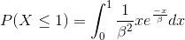
- Evaluando y operando: 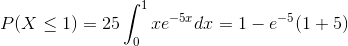
- El resultado es: 0.96

Respuesta:
La probabilidad de que transcurra 1 minuto en el momento en que entraron 2 llamadas es de 96%
Conceptos aplicados en la solución
- Por definición de función de distribución gamma:
 [1]
[1]
Distribución Chi Cuadrada
Ejemplo :

Pasos de solución
-
- La función inversa de Y es: 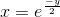
- Aplicando teorema de distribuciones de probabilidad: 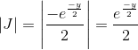
- Finalmente: 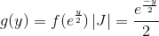
Respuesta:
La distribución de probabilidad para Y es una distribución Chi Cuadrada con 2 grados de libertad.
Conceptos aplicados en la solución
-
Teorema de distribuciones de probabilidad
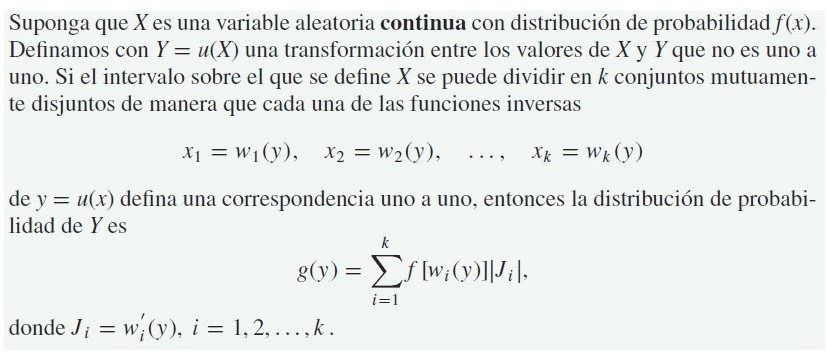
[2]
Distribución Weibull
Ejemplo :
Suponga que la vida de servicio de la batería de un auxiliar auditivo, en años, es una variable aleatoria que tiene una distribución de Weibull con α =1/2 y β = 2. ¿Cuánto tiempo se puede esperar que dure tal batería?
Adaptado del Ejercicio 6.47 Propuesto por Walpole R., Myers R., Myers S., Keying Ye (2007). Probabilidad y Estadística para ingeniería y Ciencias (8va Edición),
Mexico D.F. : Pearson (p.206)
Pasos de Solución
- Se aplica definición de distribución weibull: 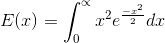
- Se opera de acuerdo a la expresión obtenida: 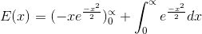 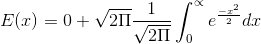
- Finalmente: 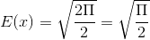
- El resultado es 1.25
Respuesta:
El tiempo en años que durará la bateria del audifono es de 1.25 años
Conceptos aplicados en la solución
- De acuerdo a definición de distribución weibull 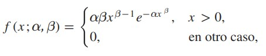
[2]
Distribución Logarítmica Normal
Ejemplo :
Los datos de frecuencia a menudo tienen una distribución logarítmica normal. Se estudia el uso promedio de potencia (dB por hora) para una empresa específica y se sabe que tiene una distribución logarítmica normal con parámetros μ = 4 y σ = 2. ¿Cuál es la probabilidad de que la empresa utilice más de 270 dB durante cualquier hora particular?
Adaptado del Ejemplo 6.56 Propuesto por Walpole R., Myers R., Myers S., Keying Ye (2007). Probabilidad y Estadística para ingeniería y Ciencias (8va Edición),
Mexico D.F. : Pearson (p.207)
[1]
Pasos de Solución
- De acuerdo a la definición de distribución logaritmica normal: 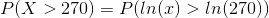
- Se opera de acuerdo a la expresión obtenida: 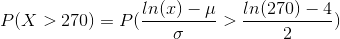
- De esta manera se obtiene: 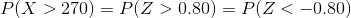
- El resultado es: 0.2119
Respuesta:
La probabilidad de que la empresa utilice mas de 270 dB durante cualquier hora es de 21.19%
Conceptos aplicados en la solución
- De acuerdo a la definición de distribución logaritmica: 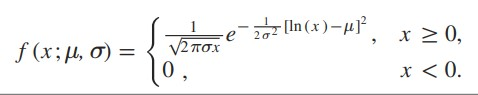
[2]
Distribución Beta
Ejemplo :
Una marca de equipos de sonido determina
una variable aleatoria que tiene una distribución beta
con α = 3 y β = 2. La cual representa la proporción de equipos que
requieren servicio durante el primer año de operación
¿Cuál es la probabilidad de que al
menos 80% de los nuevos modelos de esta marca que
se vendieron este año requieran servicio durante su primer año de operación?
Adaptado del Ejercicio 6.50 Propuesto por Walpole R., Myers R., Myers S., Keying Ye (2007). Probabilidad y Estadística para ingeniería y Ciencias (8va Edición),
Mexico D.F. : Pearson (p.206)
Pasos de solución
- Se plantea la función de densidad: 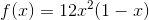
- Se resuelve para a X > 0.8: 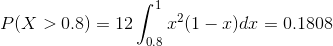
- El resultado es: 0.18
Respuesta:
La probabilidad de que los modelos requieran servicio durante su primer año de operación es de 18%, es decir 9 de cada 50 equipos.